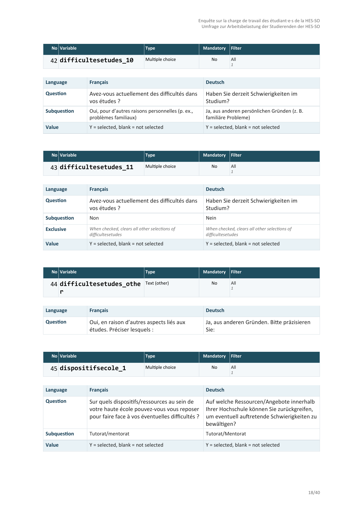
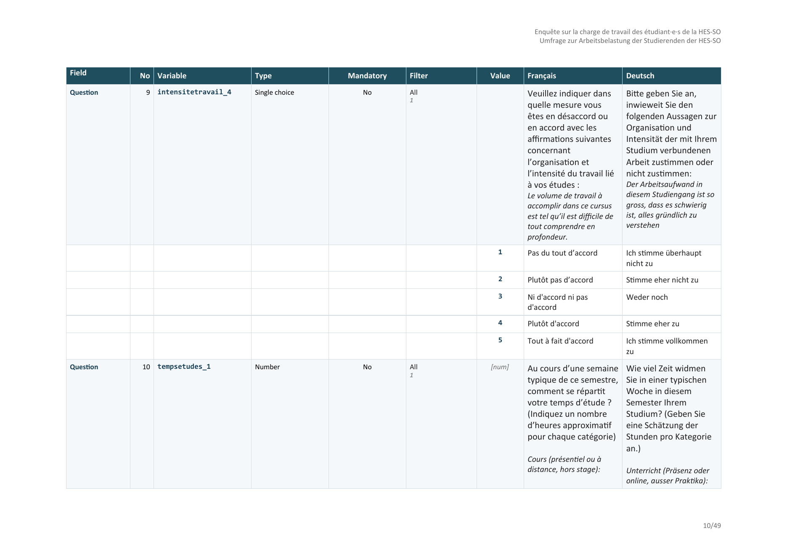

lssdoc turns a LimeSurvey .lss export into a polished Word (.docx) or PDF questionnaire document for anyone working with a LimeSurvey survey: researchers, survey methodologists, ethics committees, translators and reviewers. It renders the questionnaire content side by side in up to four languages, runs an automated integrity audit, and produces a layout that reads as a published instrument – not a developer dump.
Two output templates:
-
"cards"– one detached block per item (meta table + question table), stacked vertically. Closest to the printed questionnaire a respondent would see.
-
"table"– one dense codebook table covering the whole document: every variable is one tinted Question row carrying its metadata, followed by one or more white Value rows holding the answer codes and their labels per language. Group banners, welcome text, description and end text become labelled rows of the same table so the codebook reads as a single artifact.
Other things lssdoc takes care of for you:
- Multilingual chrome. Column headers, row labels, type labels (Single choice / Multiple choice / Text / Number …), Value descriptors, the audit section – everything outside the survey content – is translated to English, French, German, Spanish or Italian. Independent from the survey’s content languages, so you can keep your FR/DE questionnaire and switch the document scaffolding to English (or vice versa) with a single argument.
-
Variable-centric compound rendering. Array, multiple-choice and multiple-numerical questions are documented per subquestion, with the real variable code (
parent_subq) on the meta row – not the parent code, which never appears in the data export. Dual-scale arrays go one step further: each subquestion is split into one single-choice block per scale (parent_subq_1/parent_subq_2, the 1-based scale index LimeSurvey uses in its data export), so every column of the data export is documented on its own. - Methodological type labels. UI distinctions like “List (radio)” vs “List (dropdown)” collapse into “Single choice”, because the response semantics are identical and the actual codes appear in the Value section. The Type cell reads in the methodologist’s vocabulary, not LimeSurvey’s.
- Automated audit. Missing translations, duplicate codes, forward references in routing filters, array-scale inconsistencies, orphan structural references, types missing their required options or subquestions – all flagged inline on the rendered item and, when you ask for it, in a dedicated section. No AI; rule-based and reviewable.
- Local-only processing. No network calls, no third-party services. The questionnaire content never leaves the machine where R runs.
Installation
The development version, from GitHub, with pak (recommended):
# install.packages("pak")
pak::pak("amaltawfik/lssdoc")Or with remotes:
# install.packages("remotes")
remotes::install_github("amaltawfik/lssdoc")The package depends on officer and flextable (declared as Suggests – the parse and audit paths work without them).
Quick tour
The public API is four functions:
| Function | Role |
|---|---|
read_lss(file) |
Parse a .lss into a structured lss object. |
audit_lss(input) |
Inspect a survey for anomalies; returns an lss_audit object with a print() method. |
render_questionnaire(input, output, ...) |
Render the full questionnaire to a Word or PDF document. |
render_audit(input, output, ...) |
Render the audit findings alone to a Word or PDF document. |
audit_lss(), render_questionnaire() and render_audit() accept input as either a path to a .lss file or a pre-parsed lss object. The output format for the two renderers is inferred from the extension of output (.docx or .pdf).
A one-line pipeline
library(lssdoc)
# Parse the .lss and render the Word document in a single call.
render_questionnaire("survey.lss", "review.docx")The output uses the "cards" template by default, with chrome_lang following the survey’s primary content language. Open review.docx in Word, click Yes when prompted to update fields (page numbers and the table of contents).
Table layout
render_questionnaire(
"survey.lss",
"review.docx",
languages = c("en", "fr"),
template = "table",
chrome_lang = "en"
)languages controls which content columns appear and in which order; the first one is the primary language used for the table of contents and group headings. chrome_lang is independent of languages: keep chrome_lang = "en" to get English column headers and row labels even if your survey content runs in French and German – pass chrome_lang = "fr" (or "de" / "es" / "it") when you want the scaffolding to follow the content.
Ethics committee submission
render_questionnaire(
"survey.lss",
"ethics_review.docx",
languages = c("en", "fr"),
template = "table",
chrome_lang = "en",
show_privacy_settings = TRUE, # anonymized / save partial / IP / referrer / timestamp
show_admin_settings = TRUE, # alias / end URL / active
authors = list(
list(name = "Jane Doe",
affiliation = "HESAV",
orcid = "0009-0001-2345-6789"),
list(name = "John Doe",
affiliation = "HESAV",
orcid = "0009-0002-3456-7890")
),
description = paste0(
"Validated as part of the SNSF project XYZ. ",
"Reference: https://doi.org/10.5281/zenodo.123456"
)
)The cover page picks up the authors block (with clickable ORCID hyperlinks), the description (with URLs auto-detected and made clickable), and the privacy / admin settings rows in the metadata table.
Minimal questionnaire – just the variables
render_questionnaire(
"survey.lss",
"minimal.docx",
template = "table",
show_welcome = FALSE,
show_endtext = FALSE,
show_description = FALSE,
show_groups = FALSE,
show_toc = FALSE,
show_audit = FALSE,
show_index = FALSE
)Pure data: one row per variable header, one row per value code, nothing else.
Parse once, render many
# Parse a single time, then audit and render different variants
# without re-reading the .lss.
lss <- read_lss("survey.lss")
audit <- audit_lss(lss)
print(audit) # console summary of flagged anomalies
render_questionnaire(lss, "review_en.docx", languages = "en")
render_questionnaire(lss, "review_fr.docx", languages = "fr")
render_audit(lss, "qa_followup.docx")See the audit in action
A deliberately flawed survey ships with the package, so you can see what audit_lss() catches without supplying your own file:
demo <- system.file("extdata", "audit_demo.lss", package = "lssdoc")
audit_lss(read_lss(demo))
#> -- lssdoc audit ----------------------------------------------------
#> 12 findings: 5 errors, 7 warnings, 0 notes.
#> x Survey: duplicate question code 'age'
#> x Question 'age': filter references 'income', asked later (forward reference)
#> x Answer 'X': points to a question id that does not exist
#> x Subquestion 'orphan_sq': points to a question id that does not exist
#> x Question 'blank_q': text empty in every language
#> ! Question 'satisf': expects answer options, but none are defined
#> ! Question 'income': text missing in 'fr'
#> ! Question 'comment ': code carries whitespace
#> ... plus an empty group name, missing subquestions and an array-scale mismatch.PDF output
# Same call, just pass a .pdf path. The package writes the .docx
# into a temp file and converts it locally via LibreOffice
# (must be installed and on PATH).
render_questionnaire("survey.lss", "review.pdf", template = "table")
render_audit("survey.lss", "qa.pdf")Templates and palette
The rendered .docx uses an editorial petrol-blue palette tuned for publication-grade output (#133B52 primary, #3A7C8C accent, #E9F2F6 and #F4F8FA for tinted bands, #D3DCE2 for the soft grid). Calibri body / Consolas monospace by default; the font and font_code arguments accept any string to override.
Citation
Use citation("lssdoc") once the package is on CRAN, or cite the GitHub repository in the meantime:
License
MIT. See LICENSE for the full notice.